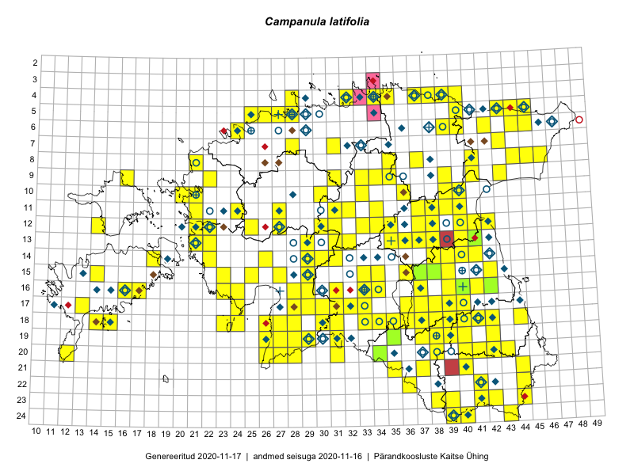

Campanula latifolia
Uuendatud: 2016-12-07
Kaardile koondatud taksonid: Campanula latifolia L.

Kaart põhineb 216 vaatlusel. Taime on leitud 150 ruudust.
| Ruut | Vaatleja(d) | Vaatlusaeg | Kirje tüüp | Viide andmebaasikirjele |
|---|---|---|---|---|
| Malle Leht | 2015-05-16 | ruut/ala | vaata PlutoFis | |
| Malle Leht | 2015-07-09 | ruut/ala | vaata PlutoFis | |
| 19-29 | Peedu Saar, Liina Oja | 2015-05-22 | ruut/ala | vaata PlutoFis |
| 18-26 | Peedu Saar, Liina Oja | 2015-05-20 | ruut/ala | vaata PlutoFis |
| 16-42 | Peedu Saar | 2015-05-01 | ruut/ala | vaata PlutoFis |
| 05-45 | Tiit Hallikma, Toomas Kukk | 2015-07-21 | ruut/ala | vaata PlutoFis |
| 12-33 | Toomas Kukk, Indrek Tammekänd | 2015-05-10 | ruut/ala | vaata PlutoFis |
| 11-40 | Toomas Kukk, Raivo Kalle | 2015-05-12 | ruut/ala | vaata PlutoFis |
| 09-31 | Ott Luuk, Toivo Sepp | 2015-07-29 | ruut/ala | vaata PlutoFis |
| 14-41 | Peedu Saar, Ott Luuk | 2015-06-21 | ruut/ala | vaata PlutoFis |
| 11-40 | Toomas Kukk, Raivo Kalle | 2015-05-12 | punkt | vaata PlutoFis |
| 11-40 | Toomas Kukk, Raivo Kalle | 2015-05-12 | punkt | vaata PlutoFis |
| 18-44 | Peedu Saar | 2015-07-04 | ruut/ala | vaata PlutoFis |
| 15-39 | Peedu Saar | 2015-07-15 | ruut/ala | vaata PlutoFis |
| 15-42 | Peedu Saar, Eerik Leibak | 2015-07-30 | ruut/ala | vaata PlutoFis |
| 16-41 | Peedu Saar, Eerik Leibak | 2015-07-30 | ruut/ala | vaata PlutoFis |
| 15-29 | Peedu Saar, Liina Oja | 2015-06-11 | ruut/ala | vaata PlutoFis |
| 08-44 | Peedu Saar, Liina Oja | 2015-07-20 | ruut/ala | vaata PlutoFis |
| 06-44 | Peedu Saar, Liina Oja | 2015-07-21 | ruut/ala | vaata PlutoFis |
| 08-45 | Peedu Saar, Liina Oja | 2015-07-22 | ruut/ala | vaata PlutoFis |
| 18-40 | Malle Leht | 2015-07-25 | ruut/ala | vaata PlutoFis |
| Malle Leht | 2015-07-08 | ruut/ala | vaata PlutoFis | |
| 19-40 | Malle Leht | 2015-07-18 | ruut/ala | vaata PlutoFis |
| 12-34 | Toomas Kukk, Tiit Hallikma | 2015-06-12 | ruut/ala | vaata PlutoFis |
| 12-35 | Toomas Kukk, Tiit Hallikma | 2015-06-12 | ruut/ala | vaata PlutoFis |
| 07-43 | Toomas Kukk, Tiit Hallikma | 2015-05-30 | ruut/ala | vaata PlutoFis |
| 16-42 | Thea Kull, Eerik Leibak | 2015-07-05 | punkt | vaata PlutoFis |
| 16-42 | Thea Kull, Eerik Leibak | 2015-07-05 | ruut/ala | vaata PlutoFis |
| 23-42 | Peedu Saar, Ott Luuk | 2015-08-12 | ruut/ala | vaata PlutoFis |
| 11-31 | Ott Luuk, Toivo Sepp | 2015-07-12 | ruut/ala | vaata PlutoFis |
| 12-21 | Tiit Hallikma, Toomas Kukk | 2015-08-27 | ruut/ala | vaata PlutoFis |
| 16-16 | Ott Luuk, Elle Roosaluste, Jaak-Albert Metsoja | 2015-06-15 | ruut/ala | vaata PlutoFis |
| 18-15 | Ott Luuk, Elle Roosaluste, Jaak-Albert Metsoja | 2015-06-16 | ruut/ala | vaata PlutoFis |
| 17-40 | Thea Kull, Peedu Saar | 2015-06-19 | ruut/ala | vaata PlutoFis |
| 18-38 | Toomas Kukk, Peedu Saar, Mall Värva, Sander Laherand | 2014-07-27 | ruut/ala | vaata PlutoFis |
| 19-27 | Meeli Mesipuu, Indrek Tammekänd | 2015-07-14 | ruut/ala | vaata PlutoFis |
| 08-46 | Thea Kull, Eerik Leibak | 2015-07-23 | ruut/ala | vaata PlutoFis |
| 19-31 | Ott Luuk, Indrek Tammekänd | 2015-05-22 | ruut/ala | vaata PlutoFis |
| 20-31 | Ott Luuk, Indrek Tammekänd | 2015-05-22 | ruut/ala | vaata PlutoFis |
| 15-23 | Indrek Tammekänd | 2015-04-06 | ruut/ala | vaata PlutoFis |
| 08-35 | Jana-Maria Habicht, Ester Valdvee, Kirke Pilvik | 2015-07-14 | ruut/ala | vaata PlutoFis |
| 09-34 | Jana-Maria Habicht, Ester Valdvee, Kirke Pilvik | 2015-07-25 | ruut/ala | vaata PlutoFis |
| 09-35 | Jana-Maria Habicht, Ester Valdvee, Tiiu Liimets | 2015-07-07 | ruut/ala | vaata PlutoFis |
| 20-28 | Ott Luuk, Eerik Leibak, Liisa Rennel | 2015-05-20 | ruut/ala | vaata PlutoFis |
| 13-41 | Eeva-Maria Jeletsky, Tarmo Niitla | 2015-04-26 | ruut/ala | vaata PlutoFis |
| 17-24 | Ott Luuk, Eerik Leibak | 2015-05-21 | ruut/ala | vaata PlutoFis |
| 20-28 | Ott Luuk, Eerik Leibak, Liisa Rennel | 2015-05-20 | punkt | vaata PlutoFis |
| 17-24 | Ott Luuk, Eerik Leibak | 2015-05-21 | punkt | vaata PlutoFis |
| 12-22 | Ott Luuk, Peedu Saar | 2015-08-24 | ruut/ala | vaata PlutoFis |
| 11-32 | Ott Luuk, Toivo Sepp | 2015-08-18 | ruut/ala | vaata PlutoFis |
| 15-33 | Maria Abakumova | 2015-07-23 | ruut/ala | vaata PlutoFis |
| 23-38 | Eeva-Maria Jeletsky, Tarmo Niitla | 2015-07-15 | ruut/ala | vaata PlutoFis |
| 11-38 | Liina Oja, Ott Luuk | 2015-05-12 | ruut/ala | vaata PlutoFis |
| 16-33 | Maria Abakumova | 2015-06-09 | ruut/ala | vaata PlutoFis |
| 06-24 | Erkki Otsman, Sergei Smirnov | 2015-05-29 | ruut/ala | vaata PlutoFis |
| 19-37 | Eeva-Maria Jeletsky, Tarmo Niitla | 2015-08-10 | ruut/ala | vaata PlutoFis |
| 05-28 | Erkki Otsman, Sergei Smirnov | 2015-06-26 | ruut/ala | vaata PlutoFis |
| 20-38 | Eeva-Maria Jeletsky, Tarmo Niitla | 2015-08-11 | ruut/ala | vaata PlutoFis |
| 23-41 | Eeva-Maria Jeletsky, Tarmo Niitla | 2015-08-03 | ruut/ala | vaata PlutoFis |
| 12-37 | Ülle Jõgar, Illi Tarmu, K. Rünk | 2015-07-23 | ruut/ala | vaata PlutoFis |
| 16-33 | Maria Abakumova | 2015-05-05 | ruut/ala | vaata PlutoFis |
| 10-39 | Kai Rünk, Ülle Jõgar, Illi Tarmu | 2015-07-27T07:00Z | ruut/ala | vaata PlutoFis |
| 10-40 | Kai Rünk, Ülle Jõgar, Illi Tarmu | 2015-07-27T12:00Z | ruut/ala | vaata PlutoFis |
| 17-32 | Maria Abakumova | 2015-05-20 | ruut/ala | vaata PlutoFis |
| 17-33 | Maria Abakumova | 2015-05-04 | ruut/ala | vaata PlutoFis |
| 17-13 | Mari Reitalu, Oliver Parrest | 2015-08-12 | ruut/ala | vaata PlutoFis |
| 18-33 | Maria Abakumova, Helle Mäemets | 2015-05-21 | ruut/ala | vaata PlutoFis |
| 18-33 | Maria Abakumova, Helle Mäemets | 2015-05-25 | ruut/ala | vaata PlutoFis |
| 18-34 | Maria Abakumova, Helle Mäemets | 2015-05-21 | ruut/ala | vaata PlutoFis |
| 14-39 | Erkki Otsman, Sergei Smirnov | 2015-07-21 | ruut/ala | vaata PlutoFis |
| 14-40 | Erkki Otsman, Sergei Smirnov | 2015-07-22 | ruut/ala | vaata PlutoFis |
| 16-23 | Maret Gerz, Leena Gerz | 2015-08-16 | ruut/ala | vaata PlutoFis |
| 08-41 | Timo Luhamäe, Liina Oja | 2015-05-14 | ruut/ala | vaata PlutoFis |
| 13-22 | Kirsi Loide, Marje Loide | 2015-08-10 | ruut/ala | vaata PlutoFis |
| 11-38 | Liina Oja, Ott Luuk | 2015-05-12 | punkt | vaata PlutoFis |
| 14-29 | Liina Oja, Ott Luuk | 2015-05-10 | ruut/ala | vaata PlutoFis |
| 14-30 | Liina Oja, Ott Luuk | 2015-05-10 | punkt | vaata PlutoFis |
| 18-42 | Kirsi Loide, Marje Loide | 2015-07-28 | ruut/ala | vaata PlutoFis |
| 19-42 | Kirsi Loide, Marje Loide | 2015-07-29 | ruut/ala | vaata PlutoFis |
| 20-12 | Oliver Parrest | 2015-08-15 | ruut/ala | vaata PlutoFis |
| 13-31 | Ott Luuk, Liina Oja | 2015-05-10 | ruut/ala | vaata PlutoFis |
| 13-35 | Ott Luuk, Liina Oja | 2015-05-11 | ruut/ala | vaata PlutoFis |
| 12-35 | Ott Luuk, Liina Oja | 2015-05-11 | ruut/ala | vaata PlutoFis |
| 11-37 | Ott Luuk, Liina Oja | 2015-05-12 | ruut/ala | vaata PlutoFis |
| 14-31 | Ott Luuk, Liina Oja | 2015-05-10 | ruut/ala | vaata PlutoFis |
| 17-33 | Maria Abakumova | 2015-05-04 | punkt | vaata PlutoFis |
| 13-36 | Meeli Mesipuu, Timo Luhamäe | 2015-06-12 | ruut/ala | vaata PlutoFis |
| 11-24 | Aat Sarv | 2015-06-24 | ruut/ala | vaata PlutoFis |
| 06-40 | Mari Metsoja, Jaak-Albert Metsoja | 2015-07-24 | ruut/ala | vaata PlutoFis |
| 06-24 | Mari Metsoja, Jaak-Albert Metsoja | 2015-07-31 | ruut/ala | vaata PlutoFis |
| 05-25 | Mari Metsoja, Jaak-Albert Metsoja | 2015-07-30 | ruut/ala | vaata PlutoFis |
| 18-14 | Mari Reitalu, Triin Reitalu | 2014-07-17 | ruut/ala | vaata PlutoFis |
| 08-41 | Timo Luhamäe, Liina Oja | 2015-05-14 | punkt | vaata PlutoFis |
| 15-36 | Helle Mäemets, Mare Leis | 2015-07-06 | ruut/ala | vaata PlutoFis |
| 06-42 | Eerik Leibak, Jaanus Paal, Uudo Timm | 2015-07-08 | ruut/ala | vaata PlutoFis |
| 17-36 | Helle Mäemets, Mare Leis | 2015-06-25 | ruut/ala | vaata PlutoFis |
| 20-31 | Ott Luuk, Indrek Tammekänd | 2015-05-22 | punkt | vaata PlutoFis |
| 04-40 | Kaili Orav, Silvia Pihu | 2015-07-21 | ruut/ala | vaata PlutoFis |
| 14-31 | Ott Luuk, Liina Oja | 2015-05-10 | punkt | vaata PlutoFis |
| 13-31 | Ott Luuk, Liina Oja | 2015-05-10 | punkt | vaata PlutoFis |
| 05-40 | Kaili Orav, Silvia Pihu | 2015-07-21 | ruut/ala | vaata PlutoFis |
| 13-35 | Ott Luuk, Liina Oja | 2015-05-11 | punkt | vaata PlutoFis |
| 24-39 | Meeli Mesipuu, Thea Kull, Eerik Leibak | 2014-06-09 | ruut/ala | vaata PlutoFis |
| 24-39 | Toomas Kukk, Peedu Saar, Kersti Püssa, Rein Kalamees | 2014-06-09 | ruut/ala | vaata PlutoFis |
| 09-22 | Ott Luuk, Peedu Saar, Maret Gerz | 2014-08-21 | ruut/ala | vaata PlutoFis |
| 21-35 | Ott Luuk, Tiit Hallikma | 2016-04-27 | ruut/ala | vaata PlutoFis |
| 18-30 | Ott Luuk, Tiit Hallikma | 2016-04-27 | ruut/ala | vaata PlutoFis |
| 18-36 | Ott Luuk, Tiit Hallikma | 2016-04-25 | ruut/ala | vaata PlutoFis |
| 18-35 | Ott Luuk, Thea Kull | 2016-05-05 | ruut/ala | vaata PlutoFis |
| 10-20 | Peedu Saar, Toomas Kukk | 2016-05-12 | punkt | vaata PlutoFis |
| 10-20 | Toomas Kukk, Peedu Saar | 2016-05-12 | ruut/ala | vaata PlutoFis |
| 05-40 | Ott Luuk, Tiit Hallikma | 2016-05-20 | ruut/ala | vaata PlutoFis |
| 04-39 | Ott Luuk, Tiit Hallikma | 2016-05-19 | ruut/ala | vaata PlutoFis |
| 14-22 | Toomas Kukk, Peedu Saar | 2016-05-14 | ruut/ala | vaata PlutoFis |
| 09-22 | Sirje Lagle, Tõnu Ploompuu | 2015-05-15 | ruut/ala | vaata PlutoFis |
| 10-21 | Tõnu Ploompuu | 2015-08-21 | ruut/ala | vaata PlutoFis |
| 18-40 | Toomas Kukk, Tiit Hallikma, Johannes Kõdar | 2016-06-13 | ruut/ala | vaata PlutoFis |
| 21-44 | Toomas Kukk, Tiit Hallikma, Johannes Kõdar | 2016-06-14 | ruut/ala | vaata PlutoFis |
| 23-44 | Rein Kalamees, Eerik Leibak | 2016-06-15 | ruut/ala | vaata PlutoFis |
| 11-37 | Eeva-Maria Jeletsky, Tarmo Niitla | 2016-06-09 | ruut/ala | vaata PlutoFis |
| 11-38 | Eeva-Maria Jeletsky, Tarmo Niitla | 2016-06-09 | ruut/ala | vaata PlutoFis |
| 11-39 | Eeva-Maria Jeletsky, Tarmo Niitla | 2016-06-10 | ruut/ala | vaata PlutoFis |
| 12-38 | Eeva-Maria Jeletsky, Tarmo Niitla | 2016-06-10 | ruut/ala | vaata PlutoFis |
| 14-38 | Kai Rünk, Ülle Jõgar, Illi Tarmu | 2016-06-20T05:00Z | ruut/ala | vaata PlutoFis |
| 20-41 | Peedu Saar, Tarmo Niitla | 2016-06-16 | ruut/ala | vaata PlutoFis |
| 20-40 | Peedu Saar, Tarmo Niitla | 2016-06-17 | ruut/ala | vaata PlutoFis |
| 12-40 | Eeva-Maria Jeletsky, Tarmo Niitla | 2016-06-26 | ruut/ala | vaata PlutoFis |
| 20-42 | Vivika Väli, Ülo Väli | 2015-07-27 | ruut/ala | vaata PlutoFis |
| 24-39 | Liina Oja, Maret Gerz | 2016-06-14 | punkt | vaata PlutoFis |
| 24-39 | Maret Gerz, Liina Oja | 2016-06-14 | ruut/ala | vaata PlutoFis |
| 19-37 | Maret Gerz, Liina Oja | 2016-06-16 | ruut/ala | vaata PlutoFis |
| 18-27 | Peedu Saar, Ott Luuk | 2016-06-10 | ruut/ala | vaata PlutoFis |
| 20-41 | Vivika Väli, Ülo Väli | 2015-07-27 | ruut/ala | vaata PlutoFis |
| 06-24 | Thea Kull, Helle Mäemets | 2016-07-07 | ruut/ala | vaata PlutoFis |
| 15-25 | Toomas Kukk, Oliver Parrest | 2016-07-08 | ruut/ala | vaata PlutoFis |
| 05-26 | Tiina Elvisto, Eerik Leibak | 2016-07-04 | ruut/ala | vaata PlutoFis |
| 13-38 | Eeva-Maria Jeletsky, Tarmo Niitla | 2016-07-23 | ruut/ala | vaata PlutoFis |
| 12-37 | Eeva-Maria Jeletsky, Tarmo Niitla | 2016-07-22 | ruut/ala | vaata PlutoFis |
| 13-40 | Ulvi Selgis | 2016-07-03 | ruut/ala | vaata PlutoFis |
| 13-37 | Eeva-Maria Jeletsky, Tarmo Niitla | 2016-07-22 | ruut/ala | vaata PlutoFis |
| 14-41 | Eeva-Maria Jeletsky, Tarmo Niitla | 2016-07-21 | ruut/ala | vaata PlutoFis |
| 20-42 | Tarmo Niitla, Peedu Saar | 2016-06-16 | ruut/ala | vaata PlutoFis |
| 14-22 | Mari Reitalu, Oliver Parrest | 2016-07-04 | ruut/ala | vaata PlutoFis |
| 10-33 | Mari Metsoja, Eerik Leibak | 2016-07-21 | ruut/ala | vaata PlutoFis |
| 09-34 | Ott Luuk, Eerik Leibak | 2016-07-25 | ruut/ala | vaata PlutoFis |
| 09-33 | Ott Luuk, Eerik Leibak | 2016-07-25 | punkt | vaata PlutoFis |
| 04-38 | Thea Kull, Susanna Vain, Eerik Leibak | 2016-07-26 | ruut/ala | vaata PlutoFis |
| 13-36 | Toomas Kukk, Raivo Kalle | 2016-07-22 | ruut/ala | vaata PlutoFis |
| 13-36 | Toomas Kukk, Raivo Kalle | 2016-07-22 | punkt | vaata PlutoFis |
| 05-25 | Sander Laherand, Toomas Kukk | 2016-07-05 | ruut/ala | vaata PlutoFis |
| 09-35 | Toomas Kukk, Tiit Hallikma | 2016-07-25 | ruut/ala | vaata PlutoFis |
| 10-39 | Ott Luuk, Eerik Leibak | 2016-08-03 | ruut/ala | vaata PlutoFis |
| 10-40 | Ott Luuk, Eerik Leibak | 2016-08-03 | ruut/ala | vaata PlutoFis |
| 10-40 | Ott Luuk, Eerik Leibak | 2016-08-03 | punkt | vaata PlutoFis |
| 09-41 | Ott Luuk, Eerik Leibak | 2016-08-05 | ruut/ala | vaata PlutoFis |
| 17-29 | Aat Sarv, Raivo Kalle | 2016-07-20 | ruut/ala | vaata PlutoFis |
| 06-39 | Thea Kull, Hannes Pehlak | 2016-07-25 | ruut/ala | vaata PlutoFis |
| 16-29 | Thea Kull, Hannes Pehlak | 2016-07-20 | ruut/ala | vaata PlutoFis |
| 18-33 | Thea Kull, Indrek Tammekänd | 2016-07-19 | ruut/ala | vaata PlutoFis |
| 15-34 | Thea Kull, Tiit Hallikma | 2016-07-22 | ruut/ala | vaata PlutoFis |
| 04-37 | Thea Kull, Eerik Leibak, Susanna Vain | 2016-07-26 | ruut/ala | vaata PlutoFis |
| 13-32 | Thea Kull, Raivo Kalle, Susanna Vain | 2016-07-21 | ruut/ala | vaata PlutoFis |
| 14-26 | Maret Gerz, Liina Oja | 2016-07-08 | ruut/ala | vaata PlutoFis |
| 11-21 | Aat Sarv, Maret Gerz | 2016-07-07 | ruut/ala | vaata PlutoFis |
| 13-21 | Aat Sarv, Maret Gerz | 2016-07-05 | ruut/ala | vaata PlutoFis |
| 12-31 | Aat Sarv, Indrek Tammekänd | 2016-07-22 | ruut/ala | vaata PlutoFis |
| 12-30 | Aat Sarv, Indrek Tammekänd | 2016-07-22 | ruut/ala | vaata PlutoFis |
| 15-14 | Maret Gerz, Peedu Saar | 2016-08-12 | ruut/ala | vaata PlutoFis |
| 22-44 | Peedu Saar, Karin Kikas | 2016-08-19 | ruut/ala | vaata PlutoFis |
| 15-42 | Karin Kikas, Elle Rajandu | 2016-06-30 | ruut/ala | vaata PlutoFis |
| 07-28 | Erkki Otsman, Sergei Smirnov | 2016-07-15 | ruut/ala | vaata PlutoFis |
| 16-42 | Kaire Lanno, Karin Kaljund | 2016-07-22 | ruut/ala | vaata PlutoFis |
| 15-39 | Kaire Lanno, Karin Kaljund | 2016-07-19 | ruut/ala | vaata PlutoFis |
| 10-30 | Erkki Otsman, Sergei Smirnov | 2016-07-25 | ruut/ala | vaata PlutoFis |
| 12-14 | Toomas Kukk, Meeli Mesipuu | 2016-08-10 | ruut/ala | vaata PlutoFis |
| 04-39 | Thea Kull, Toomas Kukk | 2016-09-05 | ruut/ala | vaata PlutoFis |
| 04-28 | Sander Laherand, Tõnu Ploompuu, Nele Jõessar | 2016-07-25 | ruut/ala | vaata PlutoFis |
| 18-28 | Liina Oja, Toivo Sepp | 2016-07-19 | punkt | vaata PlutoFis |
| 20-26 | Sirje Azarov, Indrek Tammekänd | 2016-07-18 | ruut/ala | vaata PlutoFis |
| 19-35 | Sirje Azarov, Peedu Saar | 2016-07-19 | ruut/ala | vaata PlutoFis |
| 09-35 | Toomas Kukk, Tiit Hallikma | 2016-07-25 | punkt | vaata PlutoFis |
| 08-37 | Mari Reitalu, Triin Reitalu | 2016-07-12 | ruut/ala | vaata PlutoFis |
| 12-21 | Rein Kalamees, Liina Oja | 2016-07-08 | ruut/ala | vaata PlutoFis |
| 14-18 | Mari Reitalu, Sirje Azarov | 2016-08-09 | ruut/ala | vaata PlutoFis |
| 15-27 | Tiit Hallikma, Tõnu Ploompuu | 2016-06-20 | ruut/ala | vaata PlutoFis |
| 09-43 | Rein Kalamees, Kersti Püssa | 2016-06-29 | ruut/ala | vaata PlutoFis |
| 05-44 | Peedu Saar, Toomas Kukk | 2016-09-13 | ruut/ala | vaata PlutoFis |
| 16-24 | Helle Mäemets, Thea Kull | 2016-07-04 | ruut/ala | vaata PlutoFis |
| 08-21 | Tiit Hallikma, Tõnu Ploompuu | 2016-07-07 | ruut/ala | vaata PlutoFis |
| 04-35 | Tõnu Ploompuu | 2016-07-16 | ruut/ala | vaata PlutoFis |
| 04-32 | Peedu Saar, Timo Luhamäe | 2016-07-26 | ruut/ala | vaata PlutoFis |
| 11-34 | Peedu Saar, Timo Luhamäe | 2016-07-21 | ruut/ala | vaata PlutoFis |
| 19-35 | Peedu Saar, Sirje Azarov | 2016-07-19 | punkt | vaata PlutoFis |
| 07-31 | Peedu Saar, Toivo Sepp | 2016-07-18 | ruut/ala | vaata PlutoFis |
| 19-31 | Meeli Mesipuu, Mari Metsoja | 2016-07-19 | ruut/ala | vaata PlutoFis |
| 12-27 | Ranno Puumets | 2015-06-01 | ruut/ala | vaata PlutoFis |
| 10-36 | Timo Luhamäe, Meeli Mesipuu | 2016-07-25 | punkt | vaata PlutoFis |
| 09-33 | Ott Luuk, Eerik Leibak | 2016-07-25 | ruut/ala | vaata PlutoFis |
| 12-35 | Ott Luuk, Hannes Pehlak | 2016-07-22 | ruut/ala | vaata PlutoFis |
| 18-28 | Toivo Sepp, Liina Oja | 2016-07-19 | ruut/ala | vaata PlutoFis |
| 19-28 | Toivo Sepp, Liina Oja | 2016-07-19 | ruut/ala | vaata PlutoFis |
| 20-31 | Meeli Mesipuu, Mari Metsoja | 2016-07-19 | punkt | vaata PlutoFis |
| 20-31 | Meeli Mesipuu, Mari Metsoja | 2016-07-19 | punkt | vaata PlutoFis |
| 18-26 | Ott Luuk, Peedu Saar | 2016-06-10 | ruut/ala | vaata PlutoFis |
| 19-28 | Ott Luuk, Peedu Saar | 2016-06-09 | ruut/ala | vaata PlutoFis |
| 18-41 | Ott Luuk, Sander Laherand, Susanna Vain | 2016-06-13 | ruut/ala | vaata PlutoFis |
| 24-40 | Ott Luuk, Sander Laherand, Susanna Vain | 2016-06-14 | ruut/ala | vaata PlutoFis |
| 10-36 | Meeli Mesipuu, Timo Luhamäe | 2016-07-25 | ruut/ala | vaata PlutoFis |
| 09-41 | Ott Luuk, Eerik Leibak | 2016-08-05 | punkt | vaata PlutoFis |
| 21-37 | Jaak-Albert Metsoja, Mari Metsoja | 2016-06-16 | ruut/ala | vaata PlutoFis |
| 09-22 | Jaak-Albert Metsoja, Mari Metsoja | 2016-07-06 | ruut/ala | vaata PlutoFis |
| 04-34 | Hannes Pehlak, Toomas Kukk | 2016-07-26 | ruut/ala | vaata PlutoFis |
| 19-27 | Ott Luuk, Meeli Mesipuu | 2016-08-15 | ruut/ala | vaata PlutoFis |
| 16-34 | Jaak-Albert Metsoja, Lena Neuenkamp, Sirje Azarov | 2016-07-20 | ruut/ala | vaata PlutoFis |
| 20-31 | Mari Metsoja, Meeli Mesipuu | 2016-07-19 | ruut/ala | vaata PlutoFis |
| 19-31 | Mari Metsoja, Meeli Mesipuu | 2016-07-19 | punkt | vaata PlutoFis |